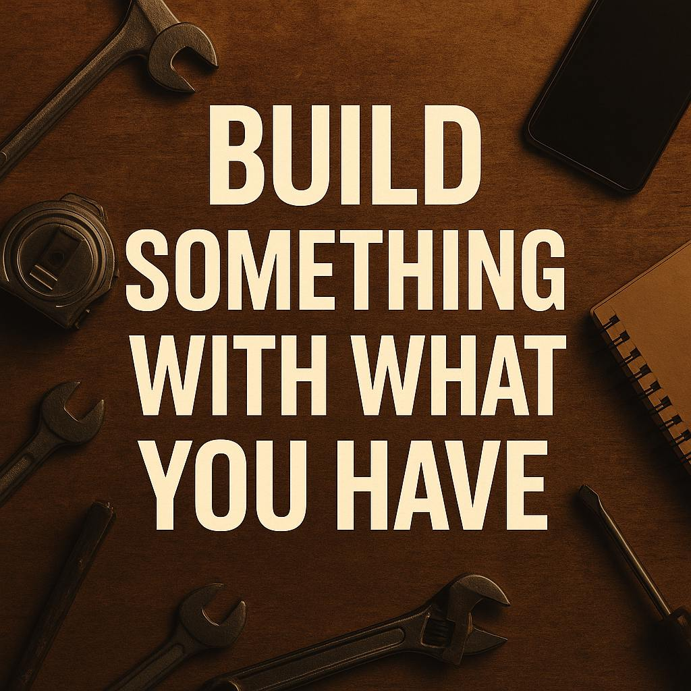

Late Night Hustle — No Laptop, No Excuses
I didn’t have much. No laptop. No proper setup. Just an old feature phone and a vision. Back then, I’d scroll through online articles using tiny screens, reading about HTML and CSS like it was sacred scripture. I didn't even know where to practice it. It felt impossible, but deep down I knew something: if I kept showing up, I'd figure it out.
The dream to build something of my own never left me. When I finally got a smartphone, it felt like the universe gave me the smallest seed — and I promised myself I’d plant it. I started downloading code editor apps like TrebEdit, Acode, and Spck Editor. Most of them didn’t work the way I expected, but I didn’t stop.
My biggest challenge wasn’t just the tools — it was keeping the fire alive when everything said “give up.” Every crash, every time the code didn’t render right, every moment of frustration — I turned that into fuel. I was coding under candlelight sometimes, saving my battery, reading HTML docs late into the night, and testing in browsers.
Building GrindHub from a Phone
Today, GrindHub isn’t just a blog — it’s proof that greatness doesn’t wait for permission. It doesn’t wait for perfect gear. I wrote the HTML structure. I designed the UI. I styled every detail with CSS — all from a 6-inch screen.
Most people wait until they have a laptop, Wi-Fi, dual monitors. I didn't wait. The only thing I had was consistency and grit. And guess what? That was enough. Slowly, I understood how flexboxes work, how mobile-first design fits into a screen, and how responsiveness plays a major role. It wasn’t easy — but easy never builds legacy.
Why I’m Sharing This
Someone out there has nothing but a dream. And if you’re reading this on your phone, you’re already holding your future. Don’t scroll past it — build with it. Start learning. Practice daily. Open your code editor and make one thing better each day.
The journey continues — but I want you to know: you don’t need big resources to start. You just need to start.